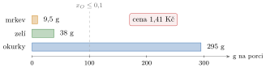
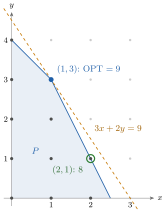
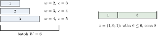

15.1 Od slov k modelu¶
Přednáška začíná úlohou, ve které ještě není nic celočíselného. Na ní je vidět, z čeho se každý model skládá: co volíme, co musí platit a co je lepší.
15.1.1 Vaříme zdravě a levně: lineární program¶
Zadání. Inspekce v restauraci „U Neurvalce“ zjistila nedostatek vitamínů A, C a vlákniny. Hospodský přidá k porci přílohu z mrkve, zelí a nakládaných okurek. Jak nařízení splnit co nejlevněji? (Příklad je z knihy J. Matoušek: Lineární programování: úvod pro informatiky, oddíl 2.1.)
| na 1 kg | mrkev | zelí | okurky | na 1 porci aspoň |
|---|---|---|---|---|
| vitamín A [mg] | 35 | 0,5 | 0,5 | 0,5 |
| vitamín C [mg] | 60 | 300 | 10 | 15 |
| vláknina [g] | 30 | 20 | 10 | 4 |
| cena [Kč] | 15 | 10 | 3 |
Odpovědi na tři otázky ze slajdu: volíme množství každé přísady na porci, platit musí tři minimální dávky, lepší je levnější. Proměnné \(x_M,x_Z,x_O\ge 0\) jsou kilogramy mrkve, zelí a okurek na jednu porci:
Jednotky sedí: koeficient v řádku vitamínu A je „mg na kg“, proměnná je v kg, takže součin je v mg na porci. Proměnné jsou reálné, je to tedy lineární program (LP), ne ILP.
Výsledek. Optimum je asi 9,5 g mrkve, 38 g zelí a 295 g okurek za 1,41 Kč na porci. Přesně \(x_M=\tfrac{179}{18790}\), \(x_Z=\tfrac{719}{18790}\), \(x_O=\tfrac{5541}{18790}\) kg a cena \(\tfrac{13249}{9395}\approx1{,}410\) Kč; všechna tři omezení platí s rovností. (Slajd uvádí zaokrouhleně 1,40 Kč a 290 g okurek; přesné hodnoty jsme přepočítali.) Složení přílohy ukazuje obr. 15.2.

Model ví jen to, co do něj napíšeme
Řešení je matematicky správné, a přesto by další inspekcí neprošlo: skoro třetina kila nakládaných okurek k jedné porci není jídlo. Model o chuti, o rozumné velikosti přílohy ani o soli nic neví. Chceme-li to, musíme to do modelu přidat jako další omezení (třeba \(x_O\le 0{,}1\)).
15.1.2 ILP: definice a terminologie¶
Definici ILP jako rozhodovacího problému známe z kapitoly 11 (definice 11.6). Přednáška 8 ji píše v optimalizačním tvaru:
Definice 15.1: Celočíselné lineární programování (ILP)
Omezení i účelová funkce jsou lineární, proměnné celočíselné.
Varianty:
- 0/1-ILP: \(x\in\{0,1\}^n\) – každá proměnná je rozhodnutí ano/ne;
- MIP / MILP (mixed integer linear programming): celočíselné jsou jen některé proměnné, ostatní jsou reálné.
Definice 15.2: Přípustné řešení, optimální řešení, optimum
Přípustné řešení je \(x\), které splňuje všechna omezení. Optimální řešení je nejlepší přípustné řešení – je to bod a může jich být víc. Optimum \(\mathrm{OPT}(I)\) je jeho hodnota na instanci \(I\) – je to číslo.
Příklad 15.3: Malé ILP ze slajdu
\(\max\ 3x+2y\) při \(x+y\le 4\), \(2x+y\le 5\), \(x,y\ge 0\) celá.
- Bod \((2,1)\) je přípustné řešení: \(2+1=3\le4\), \(4+1=5\le5\). Jeho hodnota je \(3\cdot2+2\cdot1=8\).
- Bod \((1,3)\) je optimální řešení: \(1+3=4\le 4\), \(2+3=5\le5\), hodnota \(3+6=9\). Žádný jiný celočíselný bod nemá víc (přípustných celočíselných bodů je 11, prošli jsme všechny); \(\mathrm{OPT}=9\).
- Bod \((2,2)\) přípustný není: \(2\cdot2+2=6>5\).

15.1.3 Metodika: čtyři kroky¶
Na slovní úlohu se ILP nevyskytuje samo, musíme ho postavit. Přednáška dává pevný postup:
Postup: Od slov k modelu (4 kroky)
- Rozhodnutí \(\to\) proměnné: co vlastně volíme?
- Podmínky \(\to\) nerovnice: co musí platit?
- Cíl \(\to\) účelová funkce: co je „lepší“?
- Kontrola: jednotky, krajní případy, malá instance.
Nejtěžší je krok 1: zadání proměnné neříká. Špatná volba znamená žádný model, nebo obrovský model.
Zadání (batoh). Jdeme na výlet. Máme několik předmětů, každý má svou váhu a cenu. Batoh unese nanejvýš \(W\) kilogramů. Které předměty si vzít, aby byla jejich celková cena co největší? Je to optimalizační verze problému \(\prob{Knapsack}\) z kapitoly 11 (definice 11.11).

15.1.4 Batoh jako ILP¶
Každou větu zadání přeložíme zvlášť:
| krok | slovy | v ILP |
|---|---|---|
| 1. proměnné | „Který předmět si vzít?“ | \(x_i\in\{0,1\}\) … vezmu předmět \(i\)? |
| 2. omezení | „Batoh unese nanejvýš \(W\) kg.“ | \(\sum_i w_ix_i\le W\) |
| 3. cíl | „Celková cena co největší.“ | \(\max \sum_i c_ix_i\) |
Krok 4 – kontrola na instanci \(w=(2,3,4)\), \(c=(3,4,5)\), \(W=6\). Jednotky: \(w_ix_i\) jsou kilogramy, \(c_ix_i\) koruny. Krajní případy: \(x=(0,0,0)\) je přípustné (prázdný batoh), \(x=(1,1,1)\) ne (\(9>6\)). Projdeme všech 8 vektorů \(x\): přípustné jsou \((0,0,0)\), \((1,0,0)\), \((0,1,0)\), \((0,0,1)\), \((1,1,0)\) s cenou 7 a \((1,0,1)\) s váhou \(6\le6\) a cenou 8; \((0,1,1)\) váží 7. Tedy \(x=(1,0,1)\) a \(\mathrm{OPT}(I)=8\).
ILP vs. SAT
Podmínka s čísly („váha nanejvýš \(W\)“) je v ILP jedna nerovnice. SAT by ji musel rozepsat do mnoha klauzulí (zakázat každou příliš těžkou kombinaci předmětů, nebo zakódovat sčítačku). To je hlavní důvod, proč se úlohy s kapacitami, náklady a počty modelují v ILP a čistě logické úlohy v SATu.
Typické chyby
- Chybí obor proměnných. Bez \(x_i\in\{0,1\}\) (nebo \(x_i\in\mathbb Z\)) jde o LP a řešení může vzít čtvrtinu předmětu (viz oddíl 15.4).
- Proměnná bez významu. Ke každé proměnné patří věta, co znamená (vezmu \(i\)? kolik kg?). Bez ní nejde zkontrolovat, že nerovnice říkají to, co mají.
- Nesedí jednotky. Sčítat kilogramy s korunami nebo mg na kg s mg na porci je chyba v modelu, ne v aritmetice.
- Přeskočená kontrola. Krok 4 odhalí většinu chyb: dosaď ručně jedno rozumné a jedno nesmyslné řešení a ověř, že první model připustí a druhé ne.